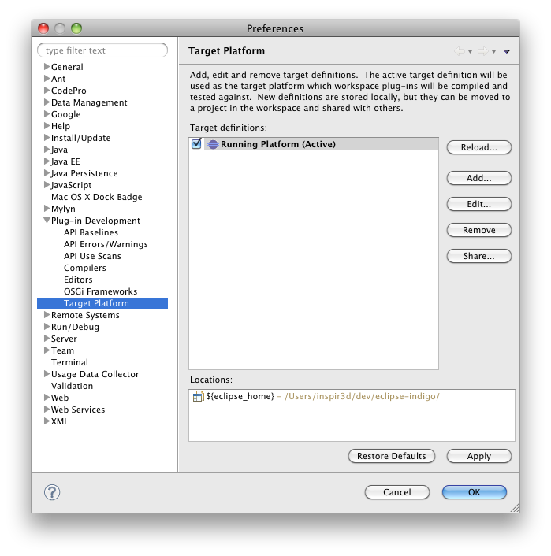
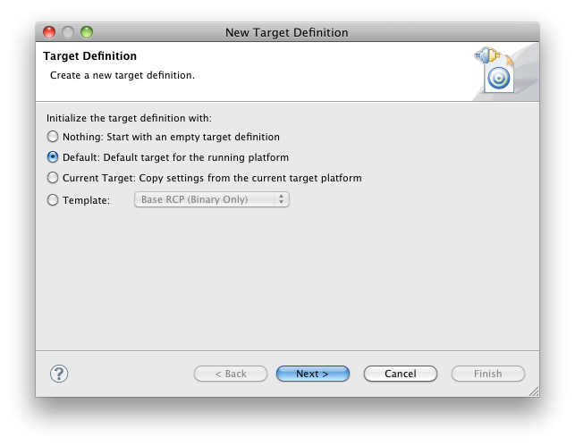

Table of Contents
The Virgo Server for Apache Tomcat, or VTS for short, requires Java SE 6 or later to be installed. Java is available from http://www.java.com/ and elsewhere.
Since you're going to use the p2 director you'll need to get it. The easiest way is to download Eclipse from here. It has built-in p2 director and other p2 applications.
Before using the director make sure you have a proper target platform set. Otherwise you may not see the director application. Here's how to do that:
Go to Eclipse's Preferences->Plug-in Development->Target Platform. Below is shown how the view looks like when a default target platform is set.

If for some reason you don't have any target platform set or it's not the default one you must set the default target platform from the image above.
If the default target platform is missing then add a new one via the Add... button and select the Default radio button as shown below:

You can now click Next and then Finish.